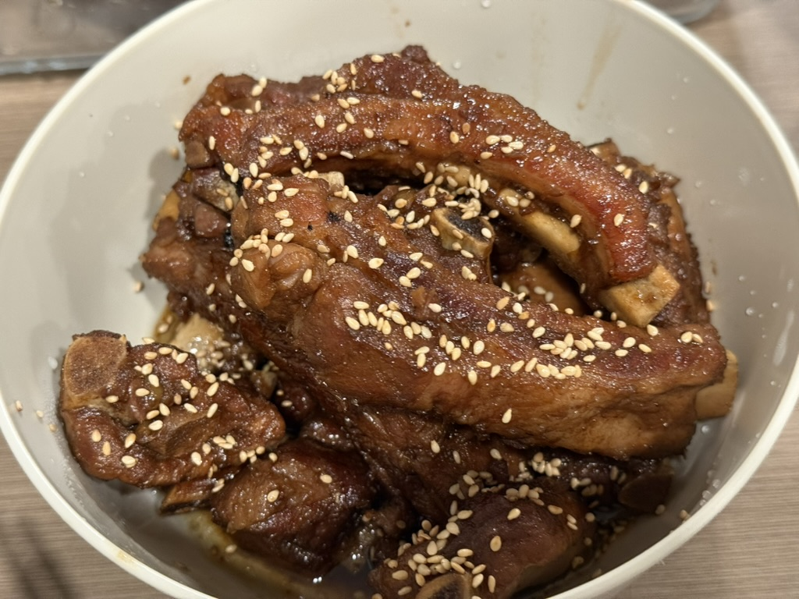
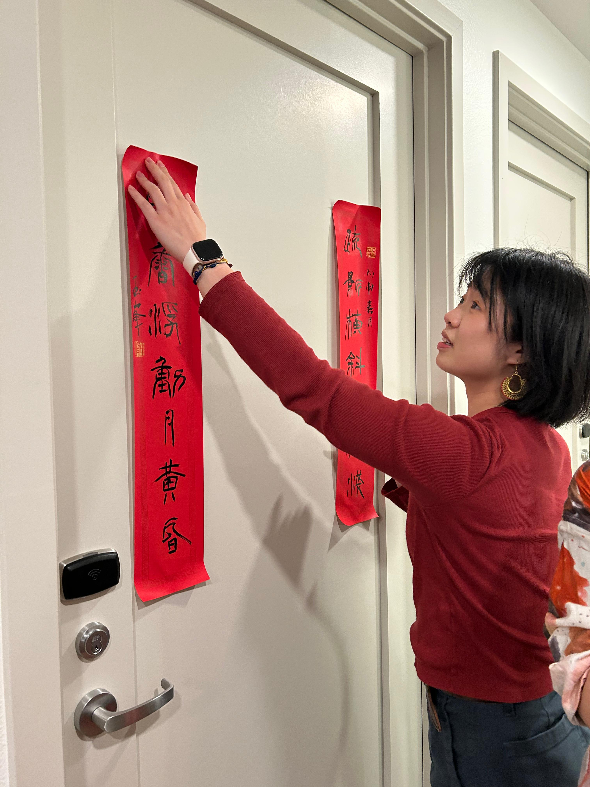

糖醋小排
Sweet and Sour Baby Back Ribs

Ingredients
- Pork spare ribs: about 800g–1kg (cut into small pieces)
- Shaoxing rice wine: 2 tbsp
- Light soy sauce: 2 tbsp
- Black rice vinegar: 3–4 tbsp
- White sugar: 2–3 tbsp
- Oyster sauce: 1 tbsp
- Pure water as needed
- Ginger slices
- Scallion segments
- Star anise
- White sesame seeds (for garnish)
- Cilantro (for garnish)
Instructions
- Prep the ribs: Place ribs in a pot with cold water, add scallions, ginger, and rice wine. Bring to a boil to remove impurities, then drain and rinse clean.
- Fry the ribs: Season with salt and soy sauce to marinate. Heat oil in a pan to about 60% heat, fry the ribs until light golden, then set aside.
- Mix the sauce: Combine all seasonings in the Instant Pot inner pot, add the ribs and toss to coat evenly. Add one bowl of water to prevent sticking.
- Pressure cook: Seal the lid with the valve in the Sealing position. Select Pressure Cook on High for 20–25 minutes.
- Natural release: Once done, let it naturally release pressure for 10–15 minutes, then manually release the remaining steam and open the lid.
- Reduce the sauce: Switch to Sauté mode and cook over medium heat until the sauce thickens and coats the ribs.
About this dish
Sweet and sour spare ribs (糖醋小排) is a beloved Shanghai specialty, known for its tender, melt-in-your-mouth
texture, harmonious sweet-and-sour flavor, and a beautiful glossy red sauce.
China is vast, and every region has its own flavor preferences — for Shanghainese, that flavor is sweet and sour.
Vinegar on its own can be sharp and piercing, but here it is gently wrapped in sweetness. You never feel the
graininess of the sugar, nor the bite of the vinegar. The thick sweet-and-sour sauce settles on your tongue like
cotton, then slowly melts away.
This dish is a staple on the Shanghai New Year's Eve dinner table. Growing up, my grandmother would always make
it. Now, living far from home in a foreign land, I make it for myself too.
Happy Chinese/Lunar New Year!
🧧🧧🧧🧧🧧🧧🧧

